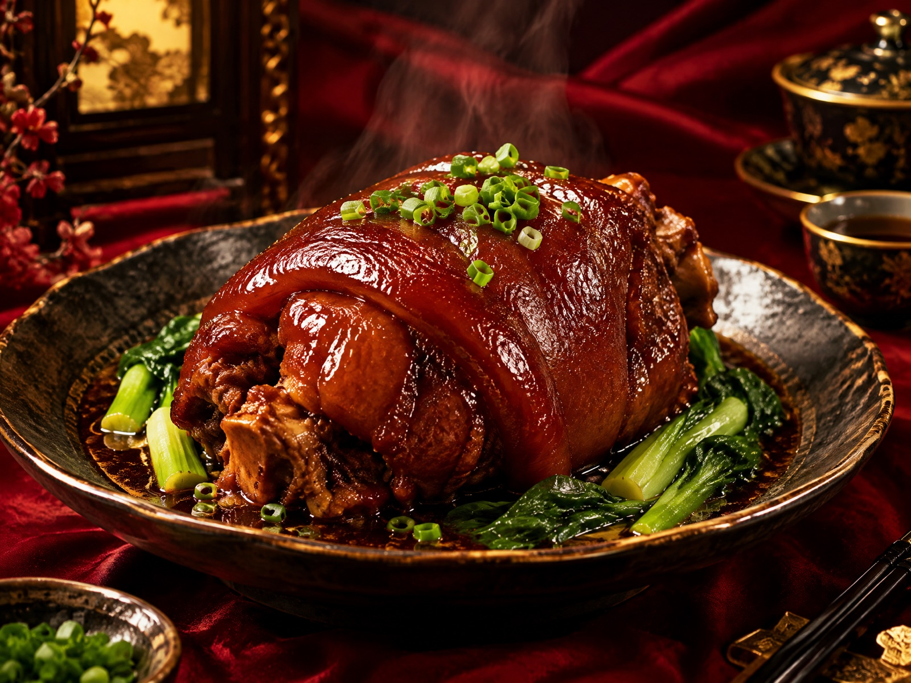
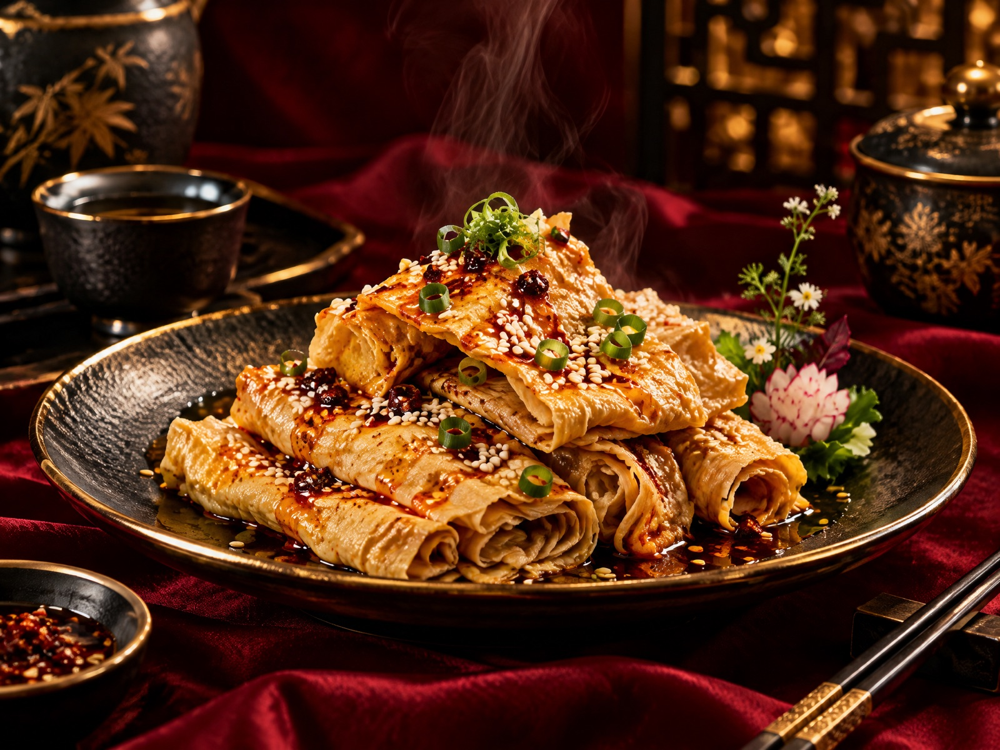
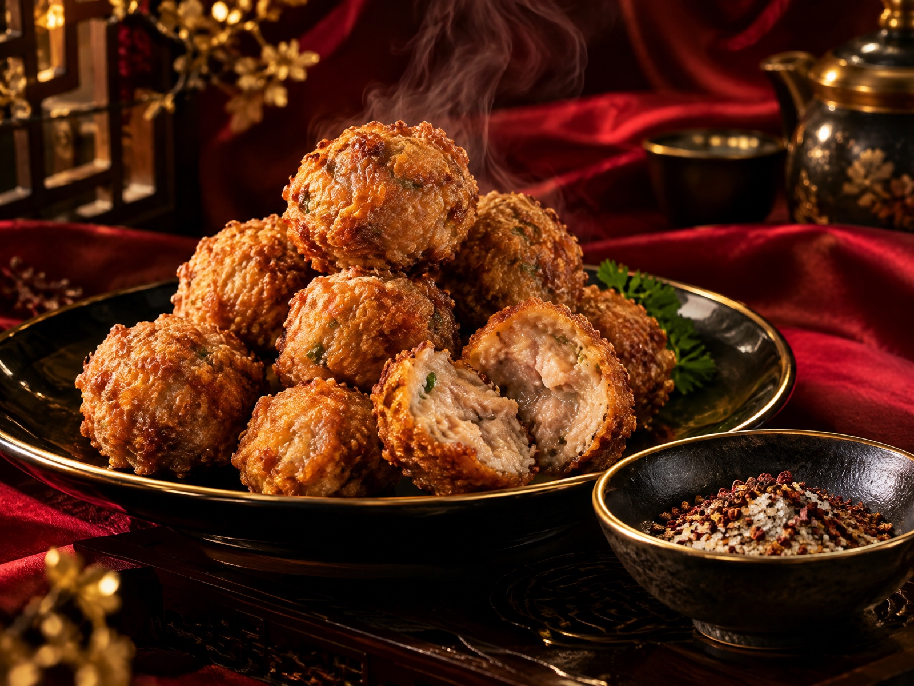
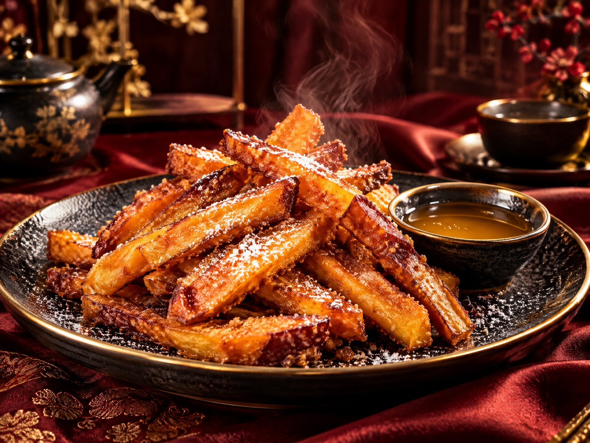

中 国 美 食 风 物 志
名 扬 臻 味
四方食事 · 不过一碗人间烟火
MINGYANG ZHENWEI · GOURMET COLLECTION

川 · 眉山 SICHUAN · MEISHAN
东坡肘子
DONGPO PORK KNUCKLE
肥而不腻 · 糯而不烂
相传此味发于北宋，苏东坡之妻王弗于眉山家中首创，后随东坡宦游四海而名动天下。整肘焯水去腥，文火慢煨数个时辰，再上笼蒸至酥融，火功到家，方能皮糯肉酥、汤浓味厚。
色如枣红琥珀，筷尖轻拨即离骨，咸鲜回甜，油润的胶质在唇齿间化作一缕绵长余韵，是川人席面上当仁不让的压轴硬菜。
冀 · 三河 HEBEI · SANHE
三河油豆皮
SANHE BEAN CURD SHEETS
薄如蝉翼 · 豆香盈袖
燕山脚下的三河小城，把一粒黄豆做到了极致。精选饱满大豆磨浆，浆沸时以竹签轻揭其皮，一层一晾，日晒风干而就。金黄透亮的豆皮薄可透光，却韧性十足，是泃河两岸传承百年的家常至味。
温水回软后切条凉拌，淋一勺香油辣子，爽滑弹牙；热锅快炒则豆香四溢，吸饱汤汁处尤为动人。朴素之味，最见真章。


京 · 年节 OLD BEIJING FEAST
干炸丸子
CRISPY DEEP-FRIED MEATBALLS
外壳酥响 · 内里滚烫
老北京年节的看家菜，讲究三分肥七分瘦，手工细细剁馅，葱姜水打上劲，团成鹌鹑大小的丸子。热油定型，复火再炸，逼出多余油脂，只留一身金黄铠甲。
趁热咬开，外壳喀嚓一声酥响，内里肉汁滚烫喷香，蘸一点椒盐入口，椒麻与肉香在舌尖次第炸开——这是北方孩子关于团圆最直接的记忆。
街 巷 甜 物 SWEET STREET SNACK
炸红薯条
CRISPY SWEET POTATO STICKS
金黄一列 · 甜糯入心
沙地蜜薯去皮切条，挂一层薄浆，落进热油里翻滚片刻便通体金黄。外壳焦脆，内里糖心软糯，拽着丝丝暖甜的香气，是冬日巷口最招人惦记的小食。
出锅撒一撮糖粉，或蘸一碟蜂蜜炼乳，咬破酥皮的瞬间，滚烫的薯香混着焦糖气息涌出来——平凡的食材，也能炸出滚烫的幸福。

一箸知味
四方食事 · 人间值得
东坡肘子的醇厚、油豆皮的清雅、炸丸子的酥响、红薯条的甜糯——
四味入喉，皆是人间。